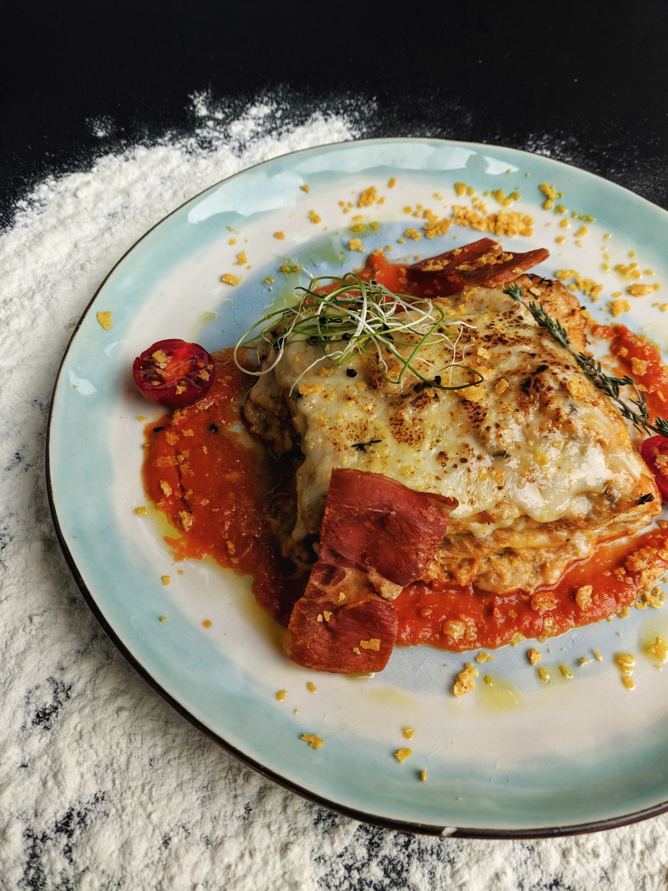

Lasagna

Description: This is the lasagna Bolognese from spain
First of all, we Make the meat sauce.
Then, make a ricotta cheese mixture
Boil the pasta and assemble the lasagna. Then we bake the dough and leave it to cool
Make the meat sauce. Add beef and sausage to a large skillet over medium-high heat, breaking it apart with a wooden spoon.
Add the onion and garlic. Cook until meat is browned, about 6-8 minutes. Drain the fat from the meat.
Return the meat to the skillet
Ingredients used:
- ground beef
- 1/2 lb. sweet Italian sausage
- 1 medium onion -chopped
- 2 garlic cloves -minced
- 1 (15 oz.) can tomato sauce
- 1 large egg
- spices(3 teaspoons salt,italian seasoning and sugar)
- ricota cheese
- 12 lasagna noodles
steps for cooking
- Preheat oven to 350 degrees F
- Make the meat sauce. Add beef and sausage to a large skillet over medium-high heat,
breaking it apart with a wooden spoon. Add the onion and garlic. Cook until meat is browned,
about 6-8 minutes. Drain the fat from the meat. Return the meat to the skillet.
- Add the tomato sauce, crushed tomatoes, tomato paste, water, sugar, 2 teaspoons salt,
2 teaspoons Italian seasoning, 1 teaspoon basil, and the black pepper. Stir until well combined
- Make a ricotta cheese mixture. Spread an even layer of the ricotta cheese mixture
Spread an even layer of meat sauce
Repeat those layers two times
- Cook the pasta al dente and Assemble the lasagna
- Add a final layer of the remaining noodles, meat sauce, and cheese.
- Cover with foil that has been sprayed with nonstick cooking spray. Bake for 45 minutes.
Remove the foil and let the lasagna cool for 15-20 minutes before cutting.